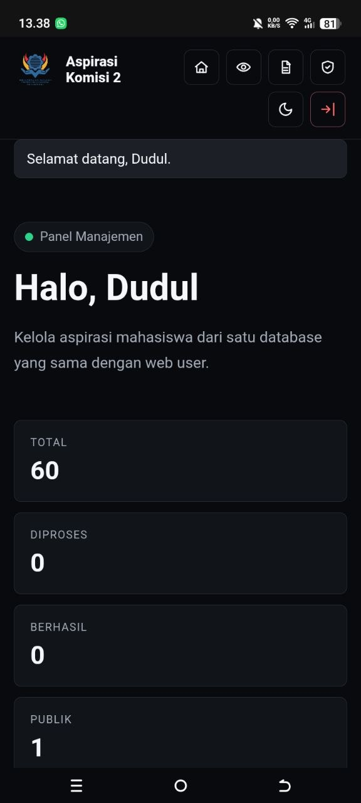
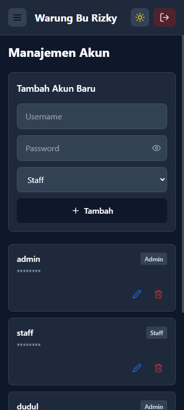

MAHASISWA SISTEM INFORMASI
agent_dudul
Mahasiswa ITB STIKOM Bali jurusan Sistem Informasi yang passionate di AI development, Networking, dan web development. Aktif di organisasi kemahasiswaan dan mantan content creator TikTok & Instagram.
Halo, saya Dudul
Si Penjelajah Digital
About
Tentang Saya
Latar belakang pendidikan, organisasi, dan karya digital.
Saya lulusan Jurusan Multimedia di SMK Pariwisata Harapan dan sekarang melanjutkan kuliah di ITB STIKOM Bali, Program Studi Sistem Informasi.
Saya juga aktif sebagai anggota Komisi 2 (Hukum & Advokasi) di Dewan Perwakilan Mahasiswa ITB STIKOM Bali. Pengalaman ini melatih komunikasi, tanggung jawab, dan cara melihat masalah dari sisi manusia.
Bekal multimedia membantu saya memahami desain grafis, produksi konten, dan pengelolaan media digital, sementara kuliah Sistem Informasi memperkuat arah belajar saya di web, backend, jaringan, dan AI automation.
Di luar projek teknis, saya juga pernah membangun identitas konten kreatif lewat akun @agent_dudul di Instagram dan TikTok.
Karya Konten & Eksperimen Sosial Media
Eksperimen konten saya digabung ke bagian Tentang Saya agar portofolio lebih ringkas. Di sini saya menaruh pengalaman membangun persona digital dan eksplorasi cara komunikasi di Instagram serta TikTok.
Skills
Keahlian & Minat
AI & Machine Learning
Membangun AI Agent dan workflow otomatis yang membantu pekerjaan digital harian.
Networking
Merancang dan mengelola jaringan internet untuk kebutuhan rumah, usaha, dan server lokal.
Web Development
Membangun website dan aplikasi web yang responsif, terstruktur, dan mudah dikembangkan.
Creative Content
Membuat konten pendek untuk media sosial dengan gaya visual dan copy yang mudah ditangkap.
Projects
Proyek Pilihan

website aspirasi mahasiswa
Website pengelolaan aspirasi mahasiswa untuk Komisi 2 Hukum & Advokasi DPM ITB STIKOM Bali. Sistem ini punya halaman user, halaman aspirasi publik, SOP, panel admin, status aspirasi, filter kategori, upload bukti foto/video sampai 100MB, dan berjalan di Raspberry Pi sebagai server lokal.

warung bu rizky
Aplikasi manajemen warung untuk mengelola produk, kategori, hutang pelanggan, daftar belanja stok, dan akun pengguna. Sistem berjalan di Raspberry Pi dengan database SQLite dan dipublikasikan lewat Cloudflare Tunnel di domain WBR.

hotspot internet usaha
Halaman hotspot trial di MikroTik yang menampilkan profil usaha Warung Bu Rizky saat pelanggan masuk ke jaringan internet.


ai agent development
Sistem personal AI automation dengan dua agen di hardware berbeda: satu berjalan di laptop lewat WhatsApp, satu berjalan di PC lewat Telegram. Keduanya dapat saling terhubung melalui server jaringan rumah dan membantu pekerjaan teknis harian.
Contact
Hubungi Saya
Terbuka untuk belajar, kolaborasi, dan projek kecil yang menarik.
Silakan hubungi lewat kanal di bawah ini. Saya paling aktif di Instagram dan TikTok.